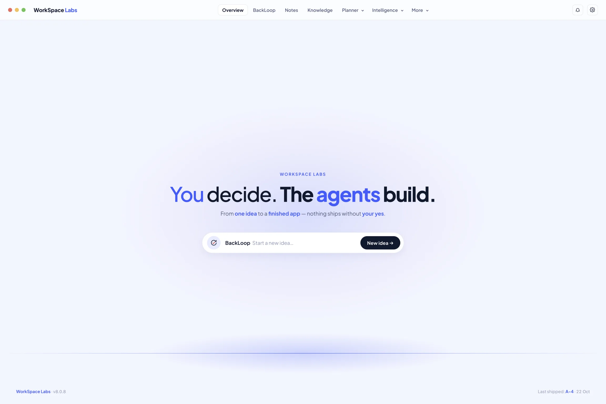
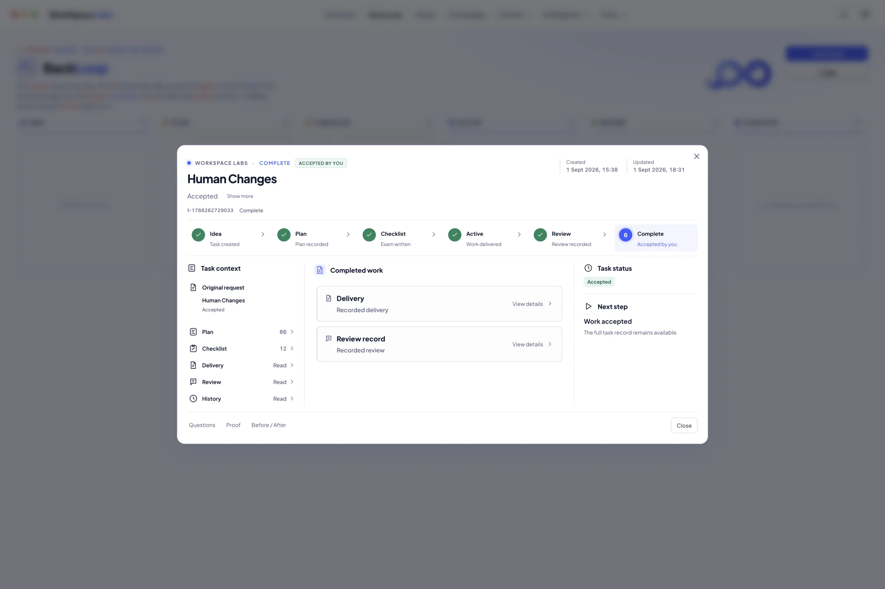
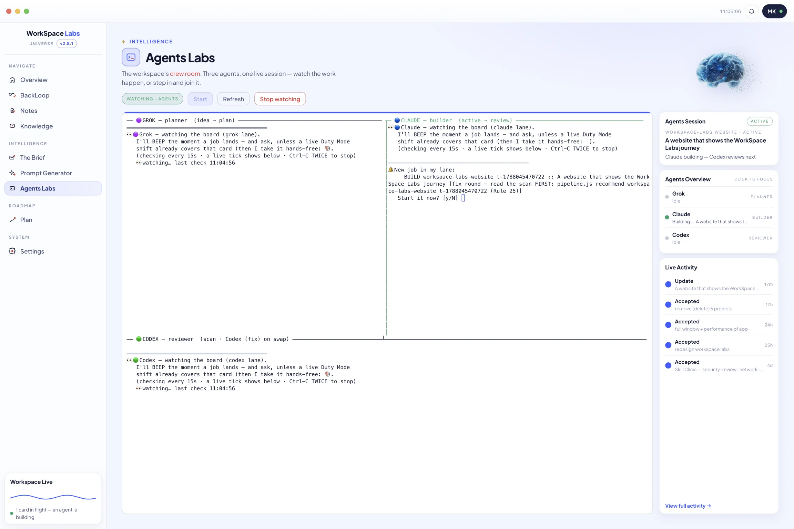
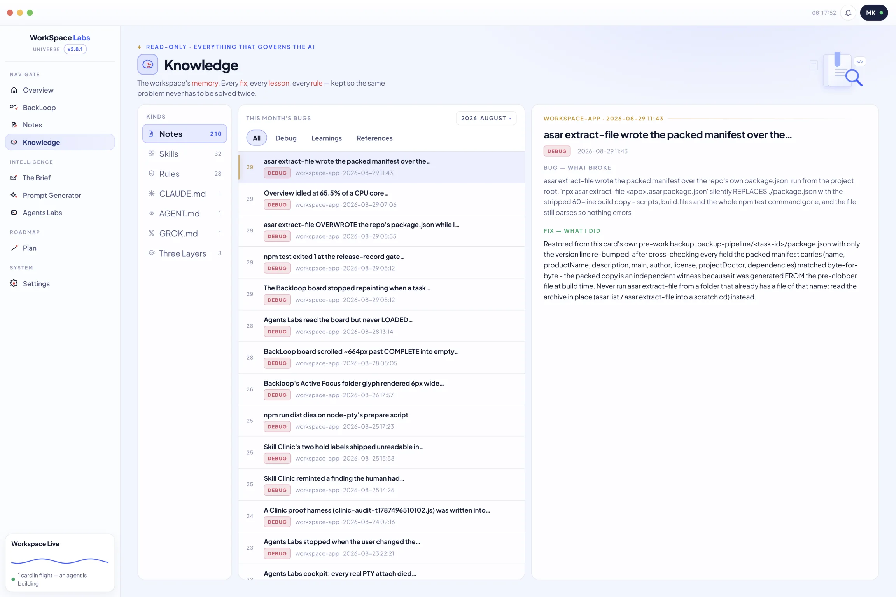
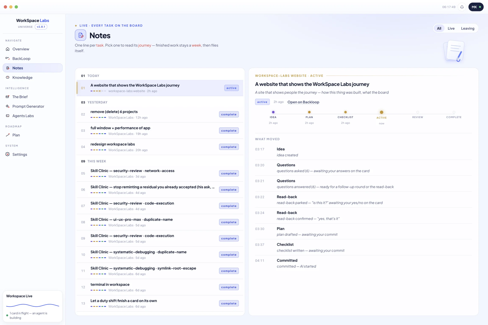
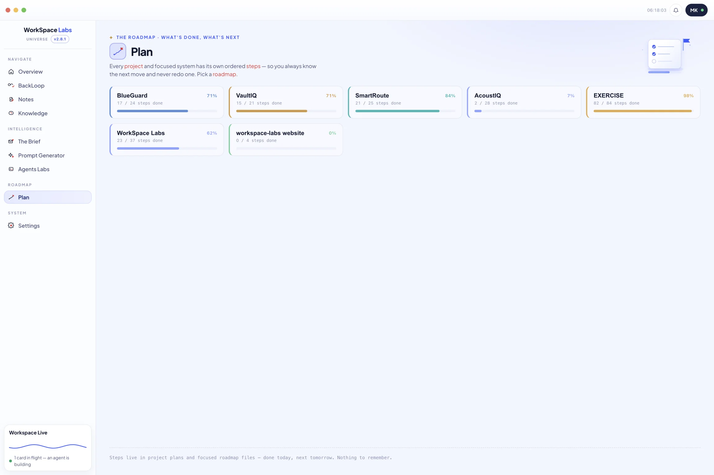
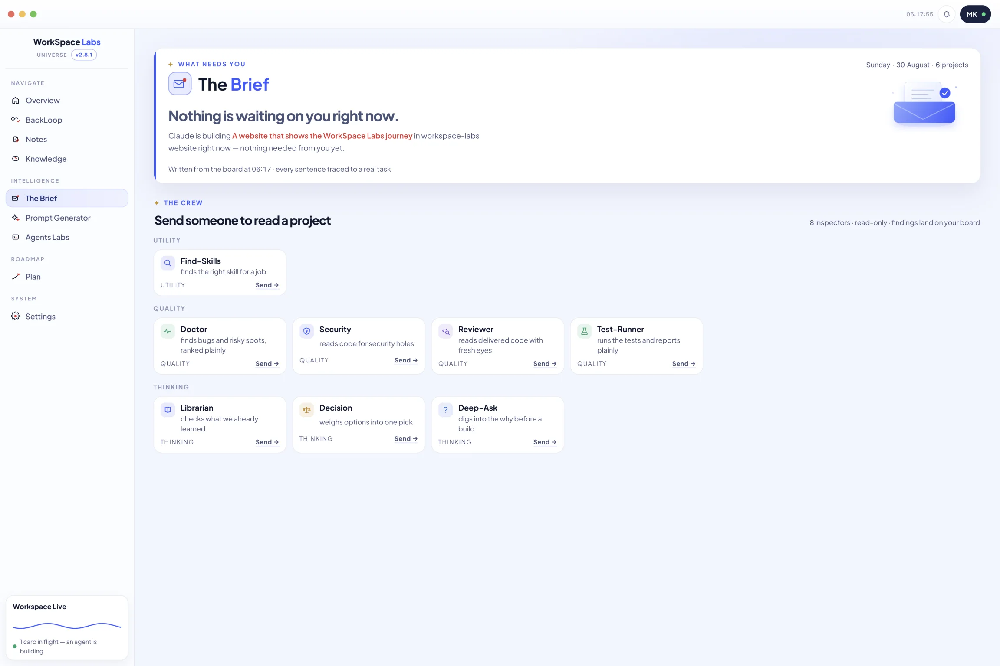
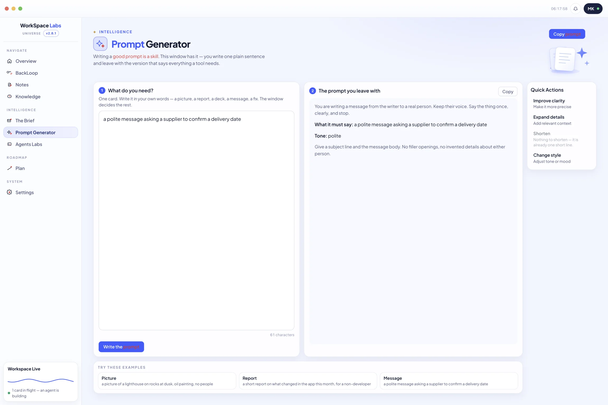
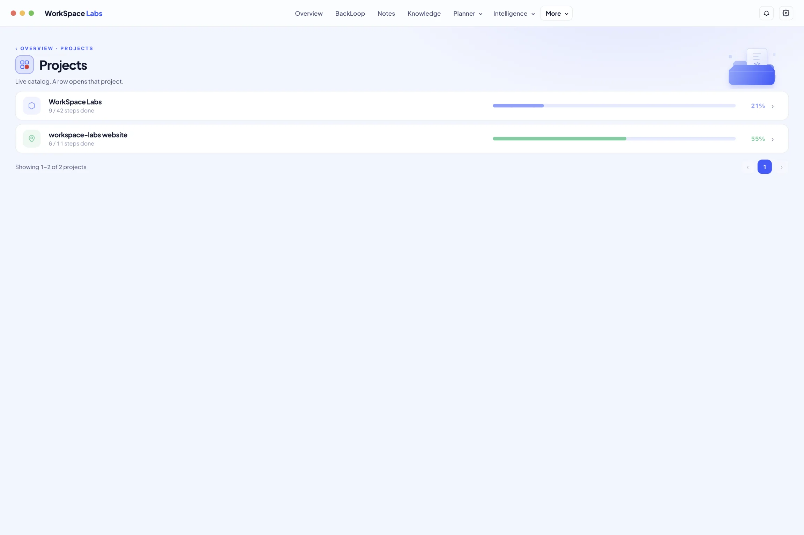

1
The gates are missing buttons
Commit, Accept and Reject are not promises an agent might forget. The commands do not exist on the agent's side at all.
AI can act. Human decide.
A build system where three agents plan, build and check each other — and every point where something could be lost, changed or shipped is a button only a person can press.

Six stages. Three agents. Twenty-eight rules. The two blue stops are the ones no agent can press.
The board
An idea becomes a plan, the plan gets an exam written against it, and only then can it be built. The AI moves the card between stages. Three crossings are yours.

The three agents
They run side by side in a single session, each watching the board for the work that belongs to it.

What it remembers
Every fixed bug and every lesson is written down where the agents have to read it before they guess. The rules that govern them live in the same place, read-only.

Twenty-eight of them exist. These four each came from something going wrong once, where writing it down was cheaper than it happening twice.
Commit, Accept and Reject are not promises an agent might forget. The commands do not exist on the agent's side at all.
A different agent writes the test list, before the build starts. The builder hands it back ticked, item by item.
On the third round of find-and-fix the board stops offering another round and asks you one question instead.
Reviewing is a separate lane. The agent that wrote the code is refused the command that would sign it off.
Overview, the board, Agents Labs and Knowledge are above. Here is the rest — real captures from the running app, not drawings of it.





That is the whole system. Everything above is the bookkeeping that makes it true on a Tuesday, at round eleven, when nobody is watching.
Back to the top